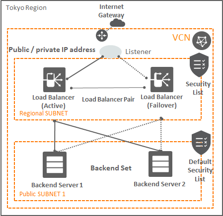
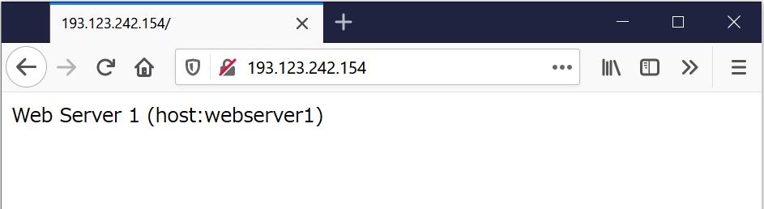

チュートリアル一覧に戻る : Oracle Cloud Infrastructure チュートリアル
Oracle Cloud Infrastructure ロードバランサー・サービスを利用することにより、仮想クラウド・ネットワーク(VCN)内の複数のサーバーに対して一つのエントリーポイントからのネットワーク・トラフィックを分散させることができます。ロードバランサー・サービスは、パブリックIPアドレスの分散を行うパブリック・ロードバランサーと、プライベートIPアドレスの分散を行うプライベート・ロードバランサーの2種類が提供されます。双方のタイプのロードバランサーとも、一定の帯域(100MB/s~8000MB/s)の保証と、高可用性がデフォルトで提供されます。またパブリック・ロードバランサーについてはVCN内の2つの異なるサブネットに跨って構成されるため、アベイラビリティ・ドメイン全体の障害に対する耐障害性が提供されます。
この章では、シンプルなパブリック・ロードバランサーを構成し、VNC内の2台のWebサーバーに対する負荷分散を構成する手順について学習します。
所要時間 : 約50分
前提条件 :
- その2 - クラウドに仮想ネットワーク(VCN)を作る を通じて仮想クラウド・ネットワーク(VCN)の作成が完了していること
- 2048bit 以上のRSA鍵ペアを作成していること
注意 : チュートリアル内の画面ショットについては Oracle Cloud Infrastructure の現在のコンソール画面と異なっている場合があります
目次 :
- 仮想クラウド・ネットワークと2つのサブネットの作成
- 2つのインスタンスの作成とWebサーバーの起動
- ロードバランサー用のサブネットの作成
- ロードバランサーの構成
- ロードバランサーへのhttp通信許可の設定
- ロードバランサーの動作の確認
- Webサーバーの保護
1. 仮想クラウド・ネットワークと2つのサブネットの作成
その2 - クラウドに仮想ネットワーク(VCN)を作る を参考に、仮想クラウド・ネットワーク(VCN)および付随するネットワーク・コンポーネントを作成してください。
作成時に 仮想クラウド・ネットワークおよび関連リソースの作成 オプションで作成することで、簡単に今回のチュートリアルに必要なVCNおよび付随コンポーネントを作成することができます。
この章では、Tokyoリージョン (可用性ドメインが1つの構成) を例として、最終的に下記のような構成を作成します。

2. 2つのインスタンスの作成とWebサーバーの起動
その3 - インスタンスを作成する を参考に、パブリック・サブネットに2つの仮想マシン・インスタンスを作成してください。その際、かならず パブリックIPアドレスの割当て を選択し、パブリックIPアドレスを割当ててください。
インスタンスが2つ起動したら、以下の手順に従ってそれぞれにWebサーバーを起動します。
- sshで2つのインスタンスにアクセスします インスタンスへのsshでのアクセス方法が不明な場合は、 その3 - インスタンスを作成する を参考にしてください。
以下の手順は、2つのインスタンスに対してそれぞれsshセッションを起動することで、同時に作業を実行して時間を短縮することができます
-
Apache HTTPサーバーをインストールします
sudo yum -y install httpd -
TCPの80番(http)および443番(https)ポートをオープンします
sudo firewall-cmd --permanent --add-port=80/tcp sudo firewall-cmd --permanent --add-port=443/tcp -
ファイアウォールを再ロードします
sudo firewall-cmd --reload -
Webサーバーを起動します
sudo systemctl start httpd -
index.html ファイルを作成し、それぞれにどちらのWebサーバーかを示す文字列を記述します。
1台目のWebサーバーで以下を実行します。
sudo sh -c 'echo "Web Server 1 (host:`hostname`)" > /var/www/html/index.html'次に2台めのWebサーバーで以下を実行します。
sudo sh -c 'echo "Web Server 2 (host:`hostname`)" > /var/www/html/index.html'
ここまでで、下記のような構成になっています。

3. ロードバランサー用のサブネットの作成
ロードバランサーは、先ほど作成したWebサーバーと同じサブネットに配置することも可能ですが、別のサブネットに配置することでWebサーバーをプライベート・サブネット上に配置して外部から直接アクセスされることを防ぐことができるようになります。
今回は、Webサーバーが配置されているサブネットとは別のパブリック・サブネットをリージョナル・サブネットとして作成し、そこにロードバランサーを配置していきます。
3-1. ロードバランサー用のセキュリティ・リストの追加
-
コンソールメニューから
ネットワーキング → 仮想・クラウドネットワークを選択し、リストから今回Webサーバーが存在する仮想クラウド・ネットワークの名称のリンクを押します -
画面左下部の
リソースメニューにあるセキュリティ・リストを選択し、セキュリティ・リストの作成ボタンを押します -
立ち上がった
セキュリティ・リストの作成ウィンドウに以下の項目を入力し、セキュリティ・リストの作成ボタンを押します名前- 任意 (画面は LB_Security_List として入力しています)コンパートメントに作成- デフォルトで現在のコンパートメントが選択されています。もし別のコンパートメントに作成したい場合は選択しますIngress RuleとEgress Ruleのエントリーをすべて削除Note
この時点ではセキュリティリストにはルールを付与しないでください。後の作業ステップにおいてロードバランサーを作成した際に、適切なルールが自動的に付与されます

3-2. ロードバランサー用のルート表の追加
-
画面左下部の
リソースメニューにあるルート表を選択し、ルート表の作成ボタンを押します -
立ち上がった
ルート表の作成ウィンドウに以下の項目を入力し、ルート表の作成ボタンを押します名前- 任意 (画面は LB_Route_Table として入力しています)コンパートメントに作成- デフォルトで現在のコンパートメントが選択されています。もし別のコンパートメントに作成したい場合は選択します宛先CIDRブロック- 0.0.0.0/0ターゲット・タイプ- Internet Gateway を選択コンパートメント- デフォルトで現在のコンパートメントが選択されています。もし別のコンパートメントに作成したい場合は選択しますターゲット・インターネット・ゲートウェイ- VCNのインターネットゲートウェイを選択

3-3. ロードバランサー用のサブネットの追加
-
画面左下部の
リソースメニューにあるサブネットを選択し、サブネットの作成ボタンを押します -
立ち上がった
サブネットの作成ウィンドウに以下の項目を入力し、サブネットの作成ボタンを押します名前- 任意 (画面では LB_Subnet と入力しています)サブネット・タイプ- リージョナル（推奨）を選択CIDR ブロック- 10.0.3.0/24ルート表- ステップ3-2で作成したルート・テーブルを選択 (画面では LB_Route_Table を選択しています)サブネット・アクセス- パブリック・サブネット を選択DNS 解決- チェックを外すDHCPオプション- 入力なしのままセキュリティ・リスト- ステップ3-1で作成したセキュリティ・リストを選択 (画面では LB_Security_List を選択しています)

ここまでの操作で、下記のような構成になりました。

4. ロードバランサーの構成
ロードバランサーを作成します。作成の際にロードバランサーに必要なシェイプ(帯域)とともに、配置先として先ほど作成したリージョナル・サブネットを選択します。
-
コンソールメニューから
ネットワーキング → ロード・バランサを選択し、ロード・バランサの作成ボタンを押します -
ロード・バランサ・タイプの選択画面ではLoad Balancer as a Serviceを選択し、ロード・バランサの作成ボタンを押します -
立ち上がった
ロード・バランサの作成画面で以下の項目を入力していきます。ロード・バランサの作成は、全部で3画面に分かれています。詳細の追加画面で下記項目を入力し、次の手順ボタンをクリック名前- 任意 (画面では Tutorial_LB と入力しています)可視性タイプの選択- パブリックを選択パブリックIPアドレスの割当て- エフェメラルIPアドレスを選択シェイプ- 最小帯域幅：10 Mbps、最大帯域幅：50 Mbps と入力仮想クラウド・ネットワーク- サブネットを作成したVCNを選択 (画面では TutorialVCN を選択しています)サブネット- ステップ3-3 で作成したリージョナル・サブネットを選択 (画面では LB_Subnet を選択しています)

バックエンドの選択画面で以下の項目を入力し、次の手順 をクリックロード・バランシング・ポリシーの指定-重み付けラウンド・ロビンを選択バックエンド・サーバーの選択-バックエンドの追加ボタンを押して、インスタンスの指定画面を表示。あらかじめ作成した2つのインスタンスを選択し、選択したバックエンドの追加ボタンを押す

- ヘルス・チェック・ポリシーの指定 - すべてデフォルトのまま
- プロトコル - HTTP (デフォルト)
- ポート - 80 (デフォルト)
- 間隔(ミリ秒) - 100000 (デフォルト)
- タイムアウト(ミリ秒) - 3000 (デフォルト)
- 再試回数 - 3 (デフォルト)
- ステータス・コード - 200 (デフォルト)
- URLパス - / (デフォルト)
- レスポンス本文の正規表現 - 空欄 (デフォルト)

リスナーの構成画面で以下の項目を入力し、すべての項目が入力できたら、画面下部の ロード・バランサの作成 ボタンを押す。リスナー名- 任意 (ここでは LB_Listener としています)リスナーで処理するトラフィックのタイプを指定します- HTTP を選択リスナーでイングレス・トラフィックをモニターするポートを指定します- 80 (デフォルト)

-
ロードバランサーの作成が開始されます。作成はバックエンドで行われ、完了するとステータスが
AVAILABLEになります
-
この時点で、ロードバランサーにグローバルIPアドレスが1つ付与されています。 ロードバランサーの概要で
IP アドレス: xxx.xxx.xxx.xxx (Public)と表示されているものを確認し、手元に値をメモしておいてください。このIPアドレスは後のステップで使用します。 -
作成が完了すると、ロードバランサからバックエンドのWebサーバー・インスタンスへのセキュリティ・ルールが自動的に追加されています。作成されたルールを確認するには、
ネットワーキング → 仮想クラウド・ネットワーク → ＜VCN名＞ → セキュリティ・リスト → ＜セキュリティ・リスト名＞で確認することができます。- ロードバランサーのサブネットに設定されたセキュリティ・ルール(Egress)

- Webサーバーのサブネットに設定されたセキュリティ・ルール(Ingress)

※赤枠の部分が追加されたルールです
5. ロードバランサーへのhttp通信許可の設定
ここまでで、ロードバランサーの設定は完了しています。最後にロードバランサーに対してインターネットからのhttp通信を許可する設定を行い、トラフィックの転送を完成させます。
-
コンソールメニューから
ネットワーキング → 仮想クラウド・ネットワークを選択し、チュートリアルで使用している仮想クラウド・ネットワークの名前のリンクをクリックします -
左下メニューから セキュリティ・リスト を選択し、ステップ3-1で追加したロードバランサー用のセキュリティリスト名のリンクをクリックします
-
イングレス・ルールの追加ボタンを押します -
入力フィールドが開くので、以下の情報を入力し、下部の
イングレス・ルールの追加をクリックしますステートレス- いいえ (デフォルト)ソースCIDR- 0.0.0.0/0IPプロトコル- TCP を選択ソース・ポート範囲- ALL宛先ポート範囲- 80

6. ロードバランサーの動作の確認
ブラウザからアクセスし、ロードバランサーが正しく動作していることを確認します。
-
ステップ 4-1 で作成した、ロードバランサーのグローバルIPアドレスを確認します。(手元にメモしているはずです)
-
ブラウザの新しいタブを開き、IPアドレスを入力して
ENTERキーを押しますWeb Server 1またはWeb Server 2と表示されることを確認します
-
ブラウザのウィンドウにフォーカスした状態で、F5キーを何度か押します すると、ウィンドウがリロードされ、
Web Server 1という表示とWeb Server 2という表示が切り替わることを確認します。 うまく切り替わるようであれば、無事にロードバランサーの構成が成功しています
7. Webサーバーの保護
最後に、Webサーバーのサブネットに設定されたルート・テーブルとセキュリティ・リストを更新し、Webサーバーを保護します。
-
コンソールメニューから
ネットワーキング → 仮想クラウド・ネットワークを選択し、チュートリアルで使用している仮想クラウド・ネットワークの名前のリンクをクリックします -
左下メニューから ルート表 を選択し、使用しているVCNのデフォルト・ルート・テーブルを選択します (
Default Route Table for TutrialVCNのような名前になっているはずです) -
下部の
ルート・ルールに表示されているCIDR Block: 0.0.0.0/0というルールの右端にカーソルをあて、削除を押して削除します
-
下部の
ルート・ルールに表示されているCIDR Block: 0.0.0.0/0というルールの右端にカーソルをあて、削除を押して削除します -
イングレス・ルールを編集し、イングレス・ルールのうち、以下のものを削除しますSOURCE CIDR IP Protocol Destination Port Range 0.0.0.0/0 TCP 22 0.0.0.0/0 ICMP 3, 4 10.0.0.0/16 ICMP 3
これで、Webサーバーのネットワークは保護され、インターネットとの間で直接通信はできなくなりました。引き続きロードバランサー経由でのhttpアクセスは許可されており、Webページは閲覧することができます。 管理用途に外部からの通信が必要な場合は、必要に応じてルート・テーブルおよびセキュリティ・リストの設定を変更してください。
以上で、この章の作業は終了です。
チュートリアル一覧に戻る : Oracle Cloud Infrastructure チュートリアル